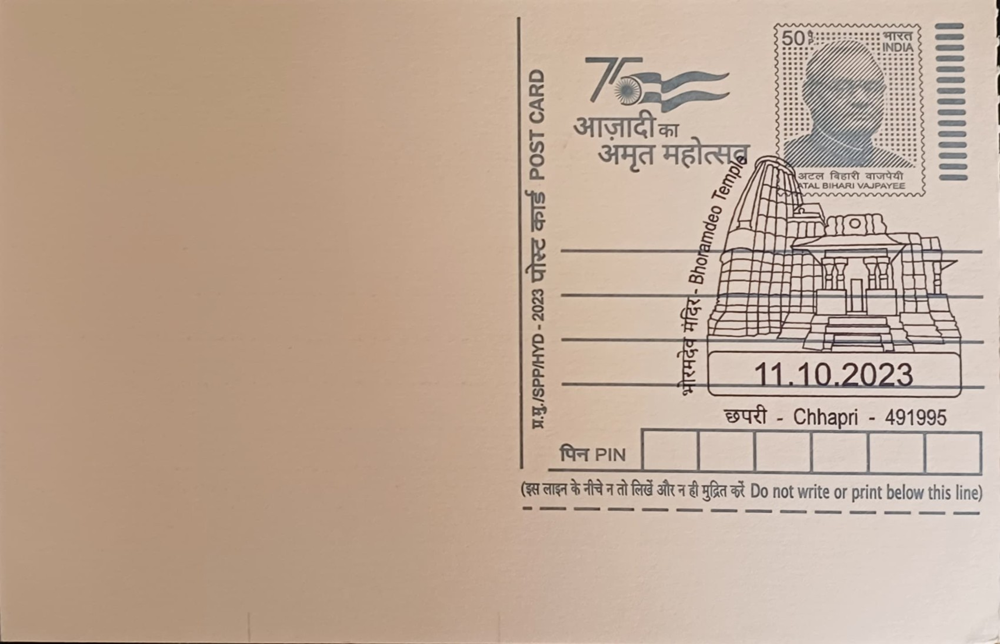

Bhoramdeo Temple
भोरमदेव मंदिर


Bhoramdeo takes its name from a local rendering of "Bhairamdev," a regional epithet for Shiva, and the temple at Chaura village near Kawardha has long been venerated as the deity's principal seat in this part of Chhattisgarh. Local tradition holds that Kawardha itself served as a capital of the Nagvanshi (Naga) rulers from roughly the 9th to the 14th centuries, and the temple's foundation is bound up with this dynasty's rise, though some scholarly accounts instead place the main shrine's construction under Kalachuri overlordship in the surrounding Chhattisgarh plains. Either way, the site predates most other surviving monuments of the Kawardha region and anchors the area's association with early medieval Shaiva kingship.
As the most architecturally ambitious temple complex in Kabirdham district, Bhoramdeo occupies a central place in Chhattisgarh's religious and art-historical landscape, earning it the popular, if imprecise, nickname "Khajuraho of Chhattisgarh" for its Nagara-style towers and sculptural idiom. It is counted among the state's most significant protected monuments and functions simultaneously as a living place of Shaiva worship and as a reference point for scholars studying the diffusion of Central Indian temple architecture into the Mahakoshal and Chhattisgarh plains, a region whose temple-building traditions remain comparatively understudied next to Khajuraho or Konark.
The main shrine, dated by most accounts to the 11th century with later additions extending into the 12th, sits at the foot of the Maikal range about eighteen kilometres northwest of Kawardha town and forms part of a cluster of four structures, the oldest of which is a brick temple predating the main stone sanctuary. Built in the Nagara idiom with a stepped, receding shikhara, the principal temple is covered in dense figural carving, ranks of celestial dancers, divine couples, and guardian deities, executed in a sculptural vocabulary that closely parallels the Khajuraho and Konark traditions further north and east, even as its patronage and workshop lineage remain tied to the comparatively obscure Naga rulers of Kawardha.
About a kilometre from the main complex stands the related Madwa Mahal, a state-protected monument whose mandapa inscription dates it to 1349 CE and credits its construction to Ramchandra Deo of the Naga dynasty; its sanctum is distinguished by a large Shiva linga raised on a platform supported by sixteen carved pillars, making it one of the more unusual engineering solutions among the region's medieval shrines and a frequently cited companion site to Bhoramdeo proper. The pairing of the two temples has made the Chaura site a focal point for documenting Naga-period architecture in Chhattisgarh specifically, rather than treating it as a minor regional echo of better-known schools.
The complex remains under the care of the Archaeological Survey of India and the state archaeology department, which have carried out periodic condition studies and restoration work on the weathered stonework of both the main shrine and Madwa Mahal in recent years. Bhoramdeo today functions simultaneously as an active Shaiva pilgrimage destination, drawing worshippers for regular rituals and the annual Bhoramdeo Mahotsav cultural festival, and as a protected heritage property whose upkeep is coordinated between national and state conservation authorities.
| Date of Introduction | October 11, 2023 |
|---|---|
| Address | Branch Postmaster, |
| Chhapri BO, | |
| Kawardha (dt.), Chhattisgarh - 491995. |